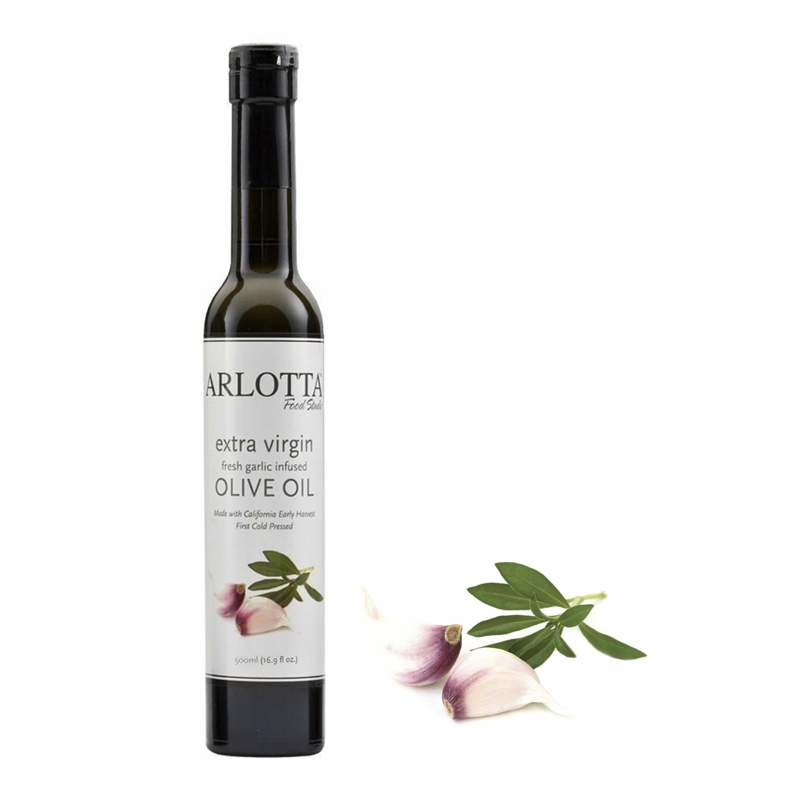

Our Story
Uncle Johnny’s Garlic Bread was founded five years ago by John Arlotta, a culinary innovator and the founder of Arlotta Food Studio—a brand known for its California-grown organic and kosher olive oils infused with essential oils, and its aged balsamic vinegars imported from Modena, Italy.
John brought his deep passion for food to the festival scene, creating a unique concept that combined convenience, quality, and flavor: garlic bread grilled fresh on a stick, served hot and fast to thousands of eager festivalgoers.
After years of successful events, John has passed the torch to Jake, a longtime mentee and close friend who has grown to be like family. Together for over a decade, their bond is the foundation of this next chapter.
Now leading the charge, Jake is dedicated to preserving John’s legacy while scaling the brand—starting with more regional festivals and eventually food trucks and a franchise model. The garlic bread may be on a stick, but the vision is anything but small.